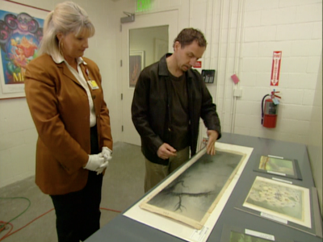

Research and Preparation
The group of people that work on the restoration of Disney’s iconic animated features do not take their work lightly. Because of the specificity of the animation process, the group must carefully piece together the disparate elements left to them by their predecessors 50, 60 years before - animation cel art, color tests, office correspondence between Walt and the animation team, image and sound print elements - and find a quorum that Restoration Director Theo Gluck calls “an informed, educated, non-combative guess.”
The group is a combination of asset management coordinators, experts from the feature animation department and technicians and restorers from the Library and Restoration team. The first thing they do is assess what print elements they have, for which they consult Disney’s Worldwide Media Library system, which is maintained by the Media Asset Management team. Scott Kelley directs this 50-employee department, “We’re a centralized group that provides media materials to all the operating units ... users go into the database and select what they want and we’re the ones who pull and move it, track it and make sure it comes back safe.”

Restoration Practices
Coming to the informed consensus

Photo © Disney

The sequential exposure negatives and all other nitrate elements are stored at the Library of Congress’ National Audiovisual Conservation Center (NAVCC) in Culpeper, Virginia. The home video team makes a request to the restoration team about a year in advance of the release date of a given DVD title, at which point the first thing Kelly and his staff do is pull the original negative and inspect and clean it by hand. They prints are usually in fairly decent shape because part of their contract with the NAVCC stipulates that they inspect and aerate the prints once a year.
According to Gluck and Kelly, Disney rarely has a dye transfer imbibition Technicolor print, which is the most accurate record of the original color levels since this type of print is so resistant to fading. This means they often have to go to other sources to assess what the proper color combinations are, at which point the team members from Disney feature animation get involved.
Those doing the research not only have to come from an animation production background to bring in a knowledge of the way color translates from cel to negative to timed print, but they have to come from a traditional hand-drawn animation background. Since this process has not been employed by Disney since the CAPS (Computer Animation Production System) digital ink and paint system was introduced in 1989, these people are becoming harder to come by. Getting the color levels right is perhaps the trickiest part of the restoration process, especially when there is no dye transfer print to reference. The reason for this, according to Stephen Worth of the ASIFA animation archive, is that

(left and above) Film cans for Bambi are pulled and inspected before cleaning.
Photos © Disney

(left) Feature animation veteran Andreas Deja meets with a researcher at the Animation Research Library (ARL) to gather information about the colors in the original cel art.
Photo © Disney
“Scene by scene and sometimes frame by frame they would do corrections to create the color palate, the overall look they were going for. They adjusted this by shooting photographs of swatches of paint and running them through the Technicolor process, and then comparing their swatches to the way it looked on the screen so that they could match the error of the levels shown in the Technicolor process”
So the dye transfer print is the brass ring - the only fully accurate record that the restorers can rely on. Sometimes Gluck says they do go out into the collecting community and will find prints there, although the studio discourages this. Says Gluck, “When they ask me where I found it I just say, ‘These are not the droids you are looking for.’”
The team also pulls items from the Disney archives, which may include anything from exposure sheets from the RGB color records, correspondence between Walt and the production team detailing what look they want, and continuity records.
(click next for Digital Restoration)

(right) Original oil-on-glass background planes used in the Multiplane camera for Bambi. Many of these planes are available for reference at the ARL.
Photo © Disney